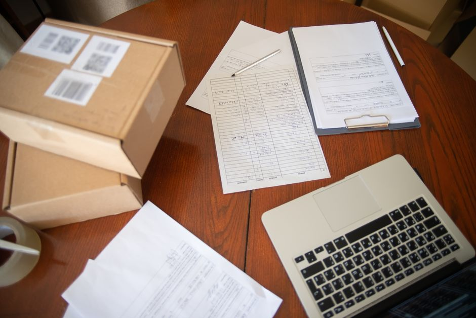

대리대출 시간표 — 확인서 90일 안에 은행까지 도착하는 법

대리대출에서 가장 흔하게 죽는 신청은 자격 미달이 아니라 시간 초과입니다. 소진공에서 '정책자금 지원대상 확인서'를 발급받았는데 보증서 발급이 늦어져 확인서가 먼저 만료되거나, 분기 접수 시작일 아침에 로그인조차 안 돼 있는 식입니다. 대리대출은 은행 돈이지만 조건은 소진공이 정하는 자금이라, 심사가 세 기관(소진공 → 보증기관 → 은행)을 차례로 통과해야 합니다. 이 글은 그 세 칸을 실제로 며칠 안에 건너야 하는지, 어느 칸에서 떨어지는지를 시간 순서대로 정리했습니다.
30초 요약
| 항목 | 내용 |
|---|---|
| 구조 | 소진공 확인서 → (보증서) → 은행 실행. 확인서는 대출 확정이 아니라 대상 확인 서류 |
| 신청 창구 | 소상공인 정책자금 누리집(ols.semas.or.kr) 온라인. 대표자 본인 신청이 원칙 |
| 확인서 유효기간 | 발급일로부터 90일 (2026년 분기별 접수 안내 기준) |
| 접수 시작 rhythm | 분기 첫째주 월요일 10:00 ~ 예산 소진 시까지 (일반경영안정자금 기준: 1/5, 4/6, 7/6 개시, 4분기는 10/6 예정) |
| 선정 방식 | 당해 연도 자금별 예산 범위 안에서 대출 실행 순서대로 선착순 |
| 확인서가 대출을 보증하지는 않음 | 보증기관·금융기관의 자체 심사가 각각 남음 |
| 취급 금융기관 | 국민·신한·우리·기업·농협·부산·경남·광주·대구·대전·전북·제주·하나·산업·새마을금고·신협·수협·산림조합·IM 등 (자금·분기별 목록은 공고문 확인) |
1. 누가 이 시간표를 따라야 하나
대리대출 7종의 신청 대상은 자금마다 다릅니다. 일반경영안정자금은 업력 무관 소상공인이라 가장 일반적인 창구이고, 소공인특화자금은 제조업 상시근로자 10인 미만, 청년고용연계자금은 업력 3년 미만 청년(만 39 이하)이면서 청년 근로자 과반·최근 1년 청년 고용 유지 같은 조건이 겹칩니다. 대상 자격 자체는 2026 정책자금 한눈에 보기의 대리대출 표를 먼저 보세요. 이 글이 다루는 건 '자격'이 아니라 '자격이 있는데 시간이 부족해서 죽는 문제'입니다.
대표자 본인 신청이 원칙이라는 점도 새겨둘 만합니다. 대출신청서 본인 서명이 필수이고, 접수 과정에서 개인 신용평점(NCB)을 조회하기 때문에 대리인 접수로는 진행이 어렵습니다. 배우자나 직원이 대신 화면을 돌려보다 시간만 새는 집이 의외로 많습니다.
2. 시간표 — 세 칸의 실제 거리
| 단계 | 주체 | 체감 소요 | 이 칸에서 죽는 이유 |
|---|---|---|---|
| ① 확인서 신청·발급 | 소진공 (ols.semas.or.kr 온라인) | 당일~수일 | 분기 접수 시작일 정각에 몰려 접속 지연. 로그인·공동인증서 미준비 |
| ② 보증서 발급 (보증서부 자금) | 지역신용보증재단·신용보증기금·기술보증기금 | 예약 대기 포함 수 주 | 상담 예약 대기가 2~3주 잡혀 확인서 90일을 넘김 |
| ③ 대출 실행 | 취급 금융기관 (방문 접수) | 수일~수 주 | 은행이 신용·담보를 따로 평가. 보증서 금액과 다른 금액으로 감액 실행 |
신용·담보부 경로는 ②가 사라지고 은행이 신용·담보를 직접 평가합니다. 구조만 보면 한 칸 짧아 보이지만, 실제로는 ①과 ③만으로도 2주가 훌쩍 지나갑니다.
핵심 숫자 두 개를 더 크게 보면 이렇습니다.
- 90일 — 확인서 유효기간. 발급한 달에 보증·은행을 끝까지 연결하지 않으면 확인서가 먼저 죽고, 처음부터 확인서 재발급으로 돌아갑니다. 2025년 안내자료에는 60일로 적혀 있었지만, 2026년 분기별 접수 안내에는 90일로 표기돼 있습니다. 확인서 우측 상단에 찍힌 실제 유효기간이 기준입니다.
- 선착순 — 자격이 있어도 그 해 예산 안에서 '대출 실행 순서'대로 채워집니다. 확인서 발급 순서가 아니라 대출 실행 순서라는 점이 미묘하게 중요합니다. 확인서를 1번에 받아도 보증서·은행에서 두 달을 보내면 실행 순위는 그 뒤로 밀립니다.
3. 분기 리듬 — 언제 창구가 열리는가
일반경영안정자금(대리)의 2026년 접수 시작은 1월 5일, 4월 6일, 7월 6일(모두 월요일) 오전 10시, 10월 6일부터의 4분기 접수가 예정돼 있습니다. 전부 '예산 소진 시까지'가 꼬리표라, 분기 초에 열렸던 접수란이 분기 중반에 닫히는 게 오류가 아니라 기본 동작입니다. 다른 대리자금(청년고용연계·장애인기업지원·긴급경영안정 등)도 분기별로 접수 안내가 별도로 올라옵니다. 내가 노리는 자금의 접수 안내가 올라왔는지 누리집 공지에서 확인하는 습관부터 들이세요.
이 리듬 때문에 생기는 실무 함정이 하나 더 있습니다. 접수 시작일 오전 10시는 '신청 시작'이지 '자금 지급'이 아닙니다. 시작일 첫 주에 확인서를 받아도 보증서·은행 단계를 통과해 실행까지 가는 사람은 분기 단위로 밀립니다. 4분기를 노린다면 10월 6일 전까지 서류·로그인·체납 정리(아래 5번 참고)를 끝내놓고 시작일 접수에 올라타는 편이 실행 순위에서 유리합니다.
4. 서류 — 기관별로 요구가 달라집니다
한 번에 다 준비하면 세 칸을 헤매지 않습니다. 기관별로 실제로 챙기는 서류 결이 다릅니다.
| 기관 | 주로 보는 것 |
|---|---|
| 소진공 (확인서) | 사업자등록증, 부가가치세 과세표준증명(또는 국민연금 가입자 가입증명 등 매출·근로자 확인 서류), 주민등록등본, 정책자금 신청서류 일체 (자금별 공통 신청서식) |
| 보증기관 (보증서) | 사업성·신용 상태, 세금체납, 보증 한도 잔액, 사업용 고정비 증빙 등 보증 심사 자료 |
| 은행 (실행) | 신용·담보 평가, 자금 사용 내역 증빙. 실행 후에도 목적 외 사용 점검 대상 |
융자 목적 외 사용이나 허위 자료 제출이 확인되면 대출금 회수·신규 대출 제한 같은 제재를 받습니다. '사업자금으로 빌려 개인 용도로 쓴' 수준의 실수도 회수 사유가 되니, 실행 후 카드 사용까지 구분해 두는 게 안전합니다.
5. 자주 막히는 지점 4가지
- 로그인·인증서 대란 — 분기 접수 첫 주 소진공 누리집은 접속이 밀립니다. 공동인증서(구 공인인증서) 유효기간이 지난 채로 접수일을 맞으면 그 분기는 포기한 거나 같습니다. 접수일 이틀 전에 로그인 테스트를 해두세요.
- 체납·연체 — 국세·지방세 체납과 금융기관 연체는 지원제외 조항에 걸립니다. 정리 자체는 당일~수 일, 신용정보 반영 해제에는 시간이 더 걸립니다. 빌릴 일이 생기고 나서 정리하면 이미 늦습니다.
- 제3자 대리 신청 — '대리대출'이라는 이름 때문에대리인가 되는 줄 아는 경우가 있는데, 정책자금 신청은 본인 원칙입니다. 제3자를 통해 신청하다 대출금 회수·신규 대출 제한 불이익을 받은 사례 안내가 매 분기 공고마다 붙어 있습니다. 피싱 피해 경고로도 같은 문구가 반복됩니다.
- 확인서=대출 확정 오해 — 확인서는 대상 확인 서류일 뿐입니다. 보증기관과 은행 심사가 각각 남아 있고, 보증 가능 금액이 신청보다 적게 나오면 실행액도 줄어듭니다. '7천만 원 신청 가능'과 '7천만 원 실행'은 다른 문장입니다.
6. 떨어졌을 때 — 재도전 시간표
확인서가 반려되거나 보증·은행 심사에서 밀렸을 때의 순서를 정리해 둡니다. ① 반려 사유를 먼저 확인합니다. 대상 자격 미달(업종·근로자 수)인지, 서류·신용 문제인지에 따라 다음 행동이 완전히 달라집니다. ② 서류·신용 문제는 정리 후 분기 단위 재도전이 가능하지만, 제외 업종·근로자 수 초과처럼 구조적 요건 미달이면 같은 자금 재도전은 의미가 없습니다. ③ 자격은 되는데 그 분기 예산이 끝난 경우라면, 다음 분기 접수 시작일에 맞춘 재준비로 전환합니다. ④ 신용 문제로 세 번 연속 밀린 경우엔 정책자금 재도전이 아니라 신용회복·채무조정 창구가 먼저인 사업체이기도 합니다. 이 경우는 희망리턴패키지·재기 지원 정리의 채무조정 흐름을 보세요.
금리를 아끼는 구석도 있습니다. 대리대출 실행 전에 우대금리 칸을 채워두면 실행 금리부터 할인됩니다. 자영업자 고용보험, 노란우산공제, 제로페이 가맹처럼 오늘 가입·등록으로 채워지는 칸들이 있으니, 접수일 최소 며칠 전에는 마무리해 두세요. 계산법은 우대금리 5종 총정리에 있습니다.
같이 읽기: [기둥 가이드] 2026 정책자금 한눈에 보기 — 자금별 한도·금리·자격 · 직접대출 vs 보증부대출, 창구 고르기 · 7문항 자격 자가진단